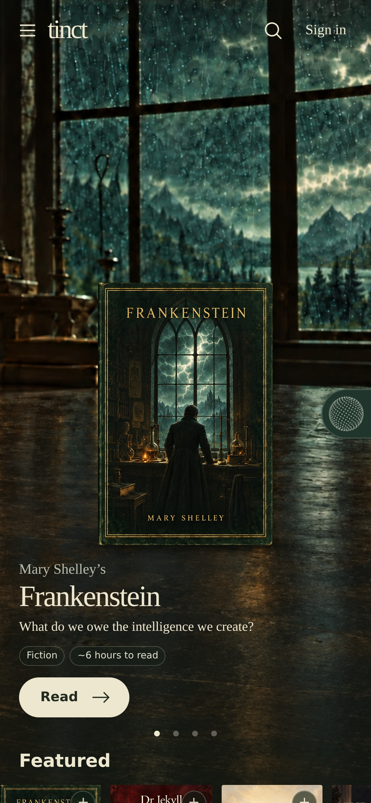
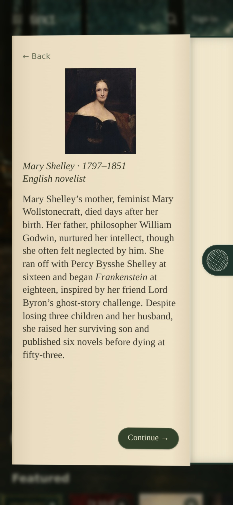

<!doctype html>
<html>
<head>
<meta charset="utf-8">
<title>One in the Morning · cut</title>
<link rel="stylesheet" href="/fonts/tinct-fonts.css">
<link rel="stylesheet" href="ui/animatic.css">
<style>
  /* overrides for the real cut */
  #clip { position: absolute; inset: 0; width: 1920px; height: 1080px; object-fit: cover; display: none; filter: contrast(1.05) saturate(.92); }
  #uibg { position: absolute; inset: -60px; background: url(ui/bg.jpg) center/cover; filter: blur(28px) brightness(.28) saturate(.8); display: none; }
  #fig { position: absolute; left: 1650px; top: 502px; width: 21px; height: 53px; display: none; filter: blur(.8px); opacity: .9; }
  .phone { left: 68%; }
  .screen img.ui { width: 100%; height: 100%; object-fit: cover; object-position: top; }
  #wm { display: none; }
  #fade { position: absolute; inset: 0; background: #000; opacity: 0; z-index: 25; }
  #grain { opacity: .07; }
  #capbg { position: absolute; left: 0; right: 0; bottom: 0; height: 330px; background: linear-gradient(transparent, rgba(0,0,0,.55)); z-index: 29; opacity: 0; }
  .label { display: none; }
</style>
</head>
<body>
<div id="uibg"></div>


<div id="scenes"></div>
<div id="fade"></div>
<div id="flash"></div>
<div id="capbg"></div><div id="cap"><div id="capText"></div><div id="capTag"></div></div>
<canvas id="grain" width="480" height="270"></canvas>
<script src="ui/p2.js"></script>
<script>
const $ = s => document.querySelector(s);
const clamp = (x, a = 0, b = 1) => Math.min(b, Math.max(a, x));
const ss = (a, b, x) => { const k = clamp((x - a) / (b - a)); return k * k * (3 - 2 * k); };
// closed-form damped spring, 0 -> 1; zeta < 1 overshoots a hair
function spring(t, freq = 7, zeta = .72) {
  if (t <= 0) return 0; const w = 2 * Math.PI * freq / 4, wd = w * Math.sqrt(1 - zeta * zeta);
  return 1 - Math.exp(-zeta * w * t) * (Math.cos(wd * t) + (zeta * w / wd) * Math.sin(wd * t));
}
function rng(seed) { let s = seed >>> 0; return () => { s = (s * 1664525 + 1013904223) >>> 0; return s / 4294967296; }; }

let EDL;
function pageHTML(id) { let i = 0; return `<div class="page" id="${id}"><div class="bar"><b>Frankenstein</b>Chapter 2</div><p>${P2.split(' ').map(w => `<span class="w" data-i="${i++}">${w}</span>`).join(' ')}</p></div>`; }
const phone = inner => `<div class="phone"><div class="screen">${inner}</div></div>`;
const UI = {
  battery: phone(`<div style="position:absolute;inset:0;background:#000;display:flex;align-items:center;justify-content:center"><div style="font:600 70px 'IBM Plex Sans';color:#ff453a">3%</div></div>`),
  feed: phone(`<div class="feed" id="feed">${[['For you', 'Frankenstein in 60 seconds ⏱'], ['A thread ↓', '5 things Frankenstein can teach AI founders'], ['Book summary', 'Frankenstein: 4 key ideas ▶ 6 min'], ['Trending', 'Mary Shelley predicted ChatGPT. Here’s how.'], ['For you', 'The 5 a.m. routine that changed everything'], ['A thread ↓', 'How to read 100 books a year'], ['Newsletter', 'The only AI tools you need this week']].map(([k, h]) => `<div class="post"><div class="k">${k}</div><div class="h">${h}</div></div>`).join('')}</div>`),
  chat: phone(`<div class="chat"><div class="q">Write a profound LinkedIn post connecting Frankenstein to AI leadership. Make me sound insightful and slightly vulnerable.</div><div class="a"><div id="a1">I used to think Victor Frankenstein was reckless.</div><br><div id="a2">I was wrong.</div><br><div id="a3"><b>He was shipping.</b></div></div></div>`),
  hero: phone(``),
  bookopen: phone(``),
  reader: phone(pageHTML('pg1')),
  explain: phone(pageHTML('pg2') + `<div class="menu" id="menu"><span class="hot">✧ Explain</span><span>Ask</span><span>Highlight</span><span>Copy</span></div><div class="card" id="exp"><div class="t">EXPLAIN</div><div class="b">Cornelius Agrippa (1486–1535), a German writer on magic and the occult. Science had moved past his ideas long before Victor’s time. Victor’s father dismisses the book without saying why.</div></div>`),
  taps: phone(pageHTML('pg3') + `<div class="card" id="tap"><div class="t" id="tapT"></div><div class="n" id="tapN"></div><div class="s" id="tapS"></div><div class="b" id="tapB"></div></div>`),
  lock: phone(`<div class="lock"><div class="time">19:42</div><div class="np"><b>Frankenstein</b><span>Chapter 7 · Tinct · ▶ 12 min left</span></div></div>`),
  talk: phone(`<div class="talk"><canvas id="orb" width="520" height="520"></canvas><h3>Listening.</h3></div>`),
  question: `<div class="titlecard" style="background:#000"><div class="q1">What do we owe the intelligence we create?</div><div class="q2">Mary Shelley · Frankenstein · 1818</div></div>`,
  endcard: `<div class="titlecard" id="endc"><div class="wm">Tinct.</div><div class="e2">Frankenstein takes about six hours.</div><div class="e3">tinct.app</div><div class="e4">Reading is free · The companion and audiobook are free for your first month</div></div>`,
};
const sphere = (() => { const p = [], n = 420, g = Math.PI * (3 - Math.sqrt(5)); for (let i = 0; i < n; i++) { const y = 1 - (i / (n - 1)) * 2, r = Math.sqrt(1 - y * y), th = g * i; p.push([Math.cos(th) * r, y, Math.sin(th) * r]); } return p; })();
function orb(t) {
  const cv = $('#orb'); if (!cv) return; const c = cv.getContext('2d'); c.clearRect(0, 0, 520, 520); c.fillStyle = '#0b0b0b';
  for (const [x0, y0, z0] of sphere) { const rr = 1 + .07 * Math.sin(y0 * 6 - t * 3.2), x = x0 * rr, y = y0 * rr, z = z0 * rr, rot = t * .3, tl = .35;
    const x1 = x * Math.cos(rot) + z * Math.sin(rot), z1 = -x * Math.sin(rot) + z * Math.cos(rot), y2 = y * Math.cos(tl) - z1 * Math.sin(tl), z2 = y * Math.sin(tl) + z1 * Math.cos(tl), d = z2 * .5 + .5;
    c.globalAlpha = .18 + d * .82; c.beginPath(); c.arc(260 + x1 * 190, 260 + y2 * 190, 2.6 * (.55 + d * .9), 0, 7); c.fill(); }
  c.globalAlpha = 1;
}
const gctx = $('#grain').getContext('2d'), gimg = gctx.createImageData(480, 270);
let current = -1;

window.READY = fetch('edl.json').then(r => r.json()).then(e => { EDL = e; window.DUR = e.duration; });

window.seek = async function (t, frame = 0) {
  await window.READY;
  const i = EDL.segments.findIndex(s => t >= s.t0 && t < s.t1), seg = EDL.segments[i] || EDL.segments.at(-1);
  if (i !== current) {                                   // mount the segment's UI once
    current = i; const host = $('#scenes');
    host.innerHTML = seg.ui ? `<div class="scene on" style="display:block">${UI[seg.ui]}</div>` : (seg.overlay ? `<div class="scene on" style="display:block">${UI[seg.overlay]}</div>` : '');
  }
  const img = $('#clip');
  if (seg.clip) {
    const n = Math.max(1, Math.round((t - seg.t0 + seg.from) * EDL.fps) + 1);
    const src = `frames/${seg.clip}/${String(n).padStart(4, '0')}.jpg`;
    if (!img.src.endsWith(src)) { img.src = src; try { await img.decode(); } catch (e) {} }
    img.style.display = 'block'; $('#uibg').style.display = 'none';
  } else { img.style.display = 'none'; $('#uibg').style.display = seg.ui === 'question' ? 'none' : 'block'; }

  // the figure across the water, and the flicker that takes it away
  const F = EDL.figure;
  $('#fig').style.display = t >= F.t0 && t < F.t1 ? 'block' : 'none';
  img.style.filter = `contrast(1.05) saturate(.92)${t >= F.flicker[0] && t < F.flicker[1] ? ' brightness(.62)' : ''}`;

  // phone entrance on a spring whenever a UI segment starts
  const ph = document.querySelector('.phone');
  if (ph) { const k = spring(t - seg.t0, 6, .8); ph.style.transform = `translateY(${(1 - k) * 120}px)`; ph.style.opacity = clamp((t - seg.t0) / .12); }

  const u = seg.ui;
  if (u === 'feed') $('#feed').style.transform = `translateY(${-(t - seg.t0) * 190}px)`;
  if (u === 'chat') ['#a1', '#a2', '#a3'].forEach((s, k) => { const p = spring(t - (seg.t0 + .9 + k * .75), 8, .7); $(s).style.opacity = clamp(p); $(s).style.transform = `translateY(${(1 - p) * 10}px)`; });
  if (u === 'hero' || u === 'bookopen') { const im = document.querySelector('.screen img.ui'); im.style.transform = `scale(${1.02 + (t - seg.t0) * .01})`; }
  if (u === 'reader') {
    let hi; if (t < 28.6) { const k = clamp((t - 21.2) / 7.4); const c = Math.round(91 + k * 20); hi = w => w >= c - 3 && w <= c; } else hi = w => w >= 139 && w < 153;
    document.querySelectorAll('#pg1 .w').forEach(w => w.classList.toggle('on', hi(+w.dataset.i)));
  }
  if (u === 'explain') {
    document.querySelectorAll('#pg2 .w').forEach(w => w.classList.toggle('ag', [76, 77].includes(+w.dataset.i)));
    $('#menu').style.opacity = ss(29.6, 29.75, t) * (1 - ss(30.25, 30.4, t));
    const k = spring(t - 30.4, 7, .75); $('#exp').style.opacity = clamp((t - 30.4) / .1); $('#exp').style.transform = `translateY(${(1 - k) * 40}px)`;
  }
  if (u === 'taps') {
    const taps = [['CHARACTER', 'Elizabeth Lavenza', 'An orphan raised as Victor’s cousin and intended bride', ''], ['EXPLAIN', 'Thonon', '', 'A spa town on the south shore of Lake Geneva.'], ['EXPLAIN', 'natural philosophy', '', 'What the period called the sciences.'], ['MODERN ENGLISH', '', '', '“My dear Victor, don’t waste your time on this. It’s worthless nonsense.”']];
    const k = Math.min(3, Math.floor((t - seg.t0) / .85)), [a, b, c, d] = taps[k], lt = t - seg.t0 - k * .85;
    $('#tapT').textContent = a; $('#tapN').textContent = b; $('#tapS').textContent = c; $('#tapB').textContent = d;
    const p = spring(lt, 9, .6); $('#tap').style.opacity = clamp(lt / .06); $('#tap').style.transform = `scale(${.94 + p * .06})`;
  }
  if (u === 'talk') orb(t);
  if (seg.overlay === 'endcard') { const e = $('#endc'); e.style.opacity = ss(77.4, 78.4, t); img.style.filter += ' brightness(.5)'; }

  // captions: beside the phone when one is on screen
  const cap = EDL.captions.find(c => t >= c[0] && t < c[1]);
  $('#cap').classList.toggle('side', !!ph);
  $('#capText').textContent = cap ? cap[2] : ''; $('#capTag').textContent = cap ? cap[3] : '';
  $('#capbg').style.opacity = cap && !ph && seg.clip ? 1 : 0;
  $('#cap').style.opacity = cap ? ss(cap[0], cap[0] + .25, t) * (1 - ss(cap[1] - .25, cap[1], t)) : 0;

  // dip to black into the question card, and out
  $('#fade').style.opacity = ss(71.9, 72.4, t) * (1 - ss(72.4, 72.5, t)) + ss(82.4, 83, t);
  const r = rng(frame * 7919 + 3), d = gimg.data; for (let q = 0; q < d.length; q += 4) { d[q] = d[q + 1] = d[q + 2] = r() * 255; d[q + 3] = 255; } gctx.putImageData(gimg, 0, 0);
};
</script>
</body>
</html>
